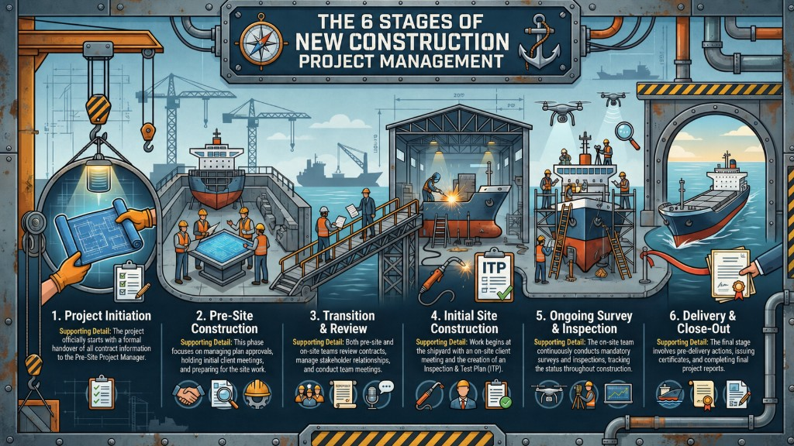

新造船專案管理
六大階段筆記
本頁將新造船專案整理成 PM／驗船師容易理解的六大步驟：從專案啟動、場前準備、移交審查、現場啟動、持續檢驗，到交付與結案。重點不是記住文件編號，而是掌握每一階段的責任、輸入資料、關鍵產出與風險控制。
Project Steps
Key Roles
Scope / Status / Stakeholders
Safe & Timely Delivery
01 · Scope and Purpose
這份流程在管理什麼？
這份筆記適用於新造船專案管理情境。PM 的任務是讓交付品準時且正確完成，同時控制服務範圍、資源、文件狀態、現場檢驗與交付風險。
新造船專案的典型範圍
PM 應抓住的三個管理軸線
02 · Six-Step Project Flow
專案六大階段總覽
整體流程可以分成六個階段。每一階段都應有清楚的責任人、輸入資料、會議紀錄、狀態追蹤與交付輸出。

Project Initiation
合約與專案資訊移交，建立基準資料。
Pre-Site Construction
圖紙、文件、會議與場前準備。
Transition & Review
場前至現場移交，重新審查合約與狀態。
Initial Site Construction
現場啟動會議與檢驗計畫建立。
Ongoing Survey & Inspection
持續檢驗、狀態更新與問題追蹤。
Delivery & Close-Out
交付前準備、證書、回饋與結案報告。
03 · Key Roles
四個核心角色
Business / Client-Facing Manager
負責在專案成立後收集合約、報價、範圍與客戶資訊，並將完整資訊移交給場前專案負責人。
Pre-Site Project Manager
管理場前階段，特別是圖紙審查分工、狀態清單、初次客戶會議與移交現場前的文件完整性。
Site Project Manager
管理現場施工階段，包含檢驗範圍、檢驗計畫、現場溝通、證書交付與結案義務完成。
Technical / Line Support
確保審圖與現場資源可用，並在資源不足、範圍變更、重大風險或偏差時提供管理支持。
04 · Six Steps in Detail
六大階段詳細說明
以下以「目的 → 主要工作 → 產出」方式整理，方便 PM 在專案進行中逐項確認。
Project Initiation｜專案啟動
當合約或服務範圍確定後，應正式啟動專案移交流程。重點是讓專案負責人清楚掌握船型、建造範圍、客戶要求、船旗國要求、報價基礎與潛在風險。
Pre-Site Construction｜場前準備
場前階段聚焦於圖紙／手冊送審、設計資訊確認、初次客戶會議、利害關係人聯絡方式與場前工作節奏。這一階段做得越清楚，現場施工時越不容易失控。
Transition & Review｜移交與審查
當專案從場前轉入現場，必須重新審查合約、圖紙狀態、未結問題、現場資源、船廠時程與責任分工。PM 交接時也應重新確認相同內容。
Initial Site Construction｜現場啟動
現場工作開始時，應召開初次現場會議並建立溝通協議。此時要確認 HSE、分包商、巡檢方式、圖紙控制、檢驗計畫、文件提交流程與未結問題處理機制。
Ongoing Survey & Inspection｜持續檢驗與追蹤
現場團隊依照核准圖紙、檢驗範圍與檢驗計畫執行檢驗，並持續更新完成狀態與未結問題。若重複再檢驗、資訊不足或問題可能影響交付，PM 應及早升級處理。
Delivery & Close-Out｜交付與結案
交付前應提前準備證書、審核文件、付款或合約條件確認，以及最後未結問題清理。交付後應整理客戶回饋、工時差異、服務表現與 lessons learned。
05 · Practical PM Checklist
PM 應固定維護的文件與狀態
📁 Project File
- 合約、報價與付款條件
- 船旗國、法規與等級要求
- 組織圖與聯絡窗口
📐 Drawing / Document Review
- 圖紙與手冊送審分工
- 審查狀態與退審原因
- 未結審查問題
🔍 Inspection Plan
- 現場檢驗範圍
- Hold / witness / review points
- 檢驗完成與未完成狀態
🧾 Certificates
- 證書草案 準備
- 授權人員審核
- 付款與交付條件確認
📊 Resources
- 每月工時與預測比較
- 超出範圍工作紀錄
- 偏差說明與改正行動
🗣 Feedback
- 客戶服務評估
- 結案會議回饋
- Lessons learned 與改善項目
06 · Deep Dives
三個最容易影響交付的管理點
1. Inspection Plan：把「要檢查什麼」變成可追蹤狀態
What
檢驗範圍可涵蓋船體、機械、電氣／控制、法定檢驗、液艙試驗、無損檢測（NDE）、調試試驗、海試等。
How
若船廠提供的檢驗計畫不夠清楚，現場團隊應建立可供追蹤的版本，並與船廠／專案團隊確認。
PM focus
檢驗計畫與未結問題必須可追蹤、可備份、可提供給客戶；重點是交付前不能留下阻斷證書的未結項目。
2. Drawing Review：圖紙狀態若沒有同步，現場會失去判斷基準
What
場前負責人要識別所有應送審文件，分配審查責任，並確保現場可掌握最新狀態。
How
審查狀態清單要持續維護，並以現場團隊同意的格式與頻率分享，讓現場能確認使用的圖紙是最新且可用。
PM focus
若送審內容不足、超出合約或需要額外工作，PM 應及早與相關管理者討論，而不是讓現場被動承受延誤。
3. Certificates & Close-Out：交付不是最後一天才開始
What
交付前應先完成證書草案、內部審核、相關要求檢查與必要副本準備。
How
在交付日前預留時間核對付款與合約條件，避免證書已準備完成但交付條件未清楚。
PM focus
結案要同時看三件事：是否準時交付、客戶是否滿意、團隊是否在預算與資源範圍內完成服務。
07 · Risk Signals
PM 需要主動升級處理的警訊
08 · Meeting and Quality Plan
客戶會議與品質計畫可討論的主題
以下主題可用來準備初次會議、進度會議或內部 team meeting。
初次會議建議主題
品質與檢驗管理主題
09 · Quick Reference
表單與紀錄用途速查
| 文件／紀錄 | 用途 | 主要使用時機 |
|---|---|---|
| Project Handover Checklist | 確認合約、範圍、報價、風險、付款、船旗國要求與現有專案狀態。 | 專案啟動、PM 更換、場前移交現場 |
| Team Handover Report | 交代 ongoing work、預期工作、未結事項與重大問題。 | 成員休假、轉調、替代人員接手 |
| Project Quality Plan | 說明服務範圍、材料／設備認證、檢驗、NDE、巡檢、試驗等品質框架。 | 初次會議、品質管理、客戶說明 |
| Meeting Checklist | 準備與記錄會議時間、出席者、議題、actions 與責任人。 | 場前與現場初次會議 |
| Service Evaluation Form | 蒐集客戶對團隊、審圖、現場服務與整體支援的評分與回饋。 | 專案中期或結案前後 |
| Relationship Checklist | 檢查 stakeholder map、decision process、variation / dispute handling、formal communication。 | 關係管理、客戶溝通風險升高時 |
| Project Completion Report | 彙整資源、財務、客戶滿意度、服務交付、團隊學習與改進建議。 | 證書交付後、內部結案會議 |
Note：本頁以學習與複習為目的進行重整，未取代正式程序、規則、合約、船旗國要求或公司最新內部指引。